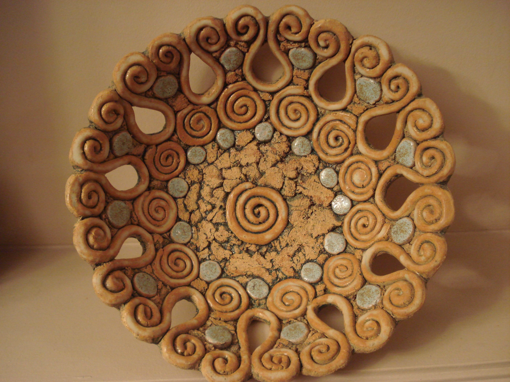
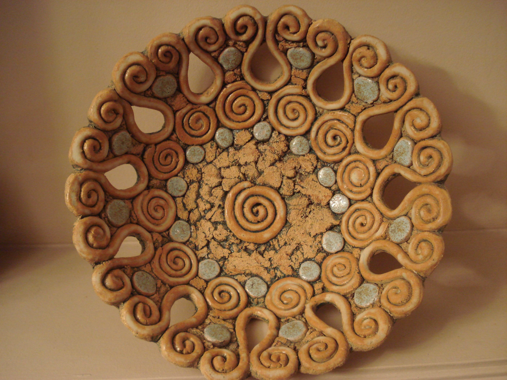

"Ceram-" kökünün bilinen en eski sözcüğü Miken Uygarlığı'nın Linear B hece yazısında "seramik işçileri" anlamındaki ke-ra-me-we'dir. "Seramik" kelimesi bir malzeme, ürün veya işlemi tarif etmek için bir sıfat olarak kullanılabilir. Aynı zamanda isim olarak tekil veya daha yaygın şekliyle çoğul olan "seramikler" şeklinde de kullanılabilir. İnsanlar tarafından yapılan en eski seramikler, kendiliğinden veya silika gibi diğer malzemelerle karıştırılmış, ateşte sertleştirilmiş ve sinterlenmiş seramik çömlekler (örneğin kap ve çanaklar) veya kilden yapılmış figürinlerdi. Daha sonra seramikler pürüzsüz olma, renkli yüzeyler oluşturma ve camsı kullanım ile gözenekliliği azaltma amacıyla sırlandı ve pişirildi. Seramikler artık yerli, endüstriyel ve inşaat ürünlerinin yanı sıra çok çeşitli seramik sanatlarını da içinde barındırıyor. 20.yüzyılda, yarı iletkenler gibi ileri seramik mühendisliğinde kullanılmak üzere yeni seramik malzemeler geliştirilmiştir.

 



Kristal Seramikler
Kristal seramik malzemeler çok çeşitli işlemlere uygun değildir. Bu durumda iki kategoriden birine girme durumundadırlar – yerinde reaksiyon ile seramiğe istenilen şekil verilir veya daha sonra katı bir gövde oluşturmak için sinterlenir. Seramik şekillendirme teknikleri, elle şekillendirme, kayma döküm (slip casting), bant dökümü (çok ince seramik kapasitörleri yapmak için kullanılır), enjeksiyon kalıplama, kuru presleme ve diğer varyasyonları içerir. Seramik malzemeler inorganik, metalik olmayan, genellikle kristal oksit, nitrür veya karbür malzemelerdir. Karbon veya silikon gibi bazı elementler seramik olarak kabul edilebilir. Seramik malzemeler kırılgandır, serttir, sıkıştırma bazında güçlüdür ve kesme ile gerginlik bazında zayıftır. Asidik veya kostik ortamlara maruz kalan diğer malzemelerde meydana gelen kimyasal erozyona dayanırlar. Seramikler genellikle 1,000 °C–1,600 °C (1,800 °F–3,000 °F) arasında değişen çok yüksek sıcaklıklara dayanabilir. Amorf (kristal olmayan) karakteri nedeniyle cam genellikle seramik olarak kabul edilmez. Bununla birlikte, cam yapımı seramik işleminin birkaç aşamasını içerir ve mekanik özellikleri seramik malzemelere benzer. Geleneksel seramik hammaddeleri kaolinit gibi kil minerallerini içerirken, daha yeni malzemeler alümina olarak bilinen alüminyum oksit içerir. İleri seramik olarak sınıflandırılan modern seramik malzemeler arasında silisyum karbür ve tungsten karbür bulunmaktadır. Her ikisi de aşınma dirençleri sebebiyle değerlidir ve bu nedenle madencilik operasyonlarında yer alan kırma ekipmanlarında da kullanılır. Gelişmiş seramikler tıp, elektrik, elektronik endüstrileri ve vücut zırhlarında da kullanılmaktadır.
IREMION
Seramik satın almak ister misiniz?
İletişim